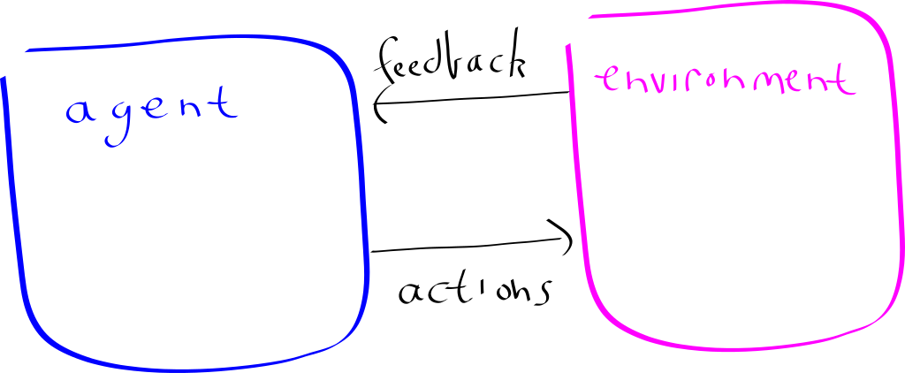
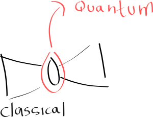
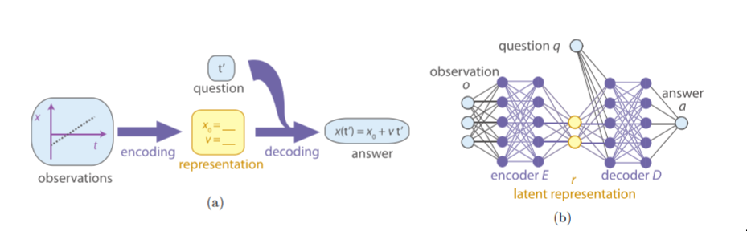
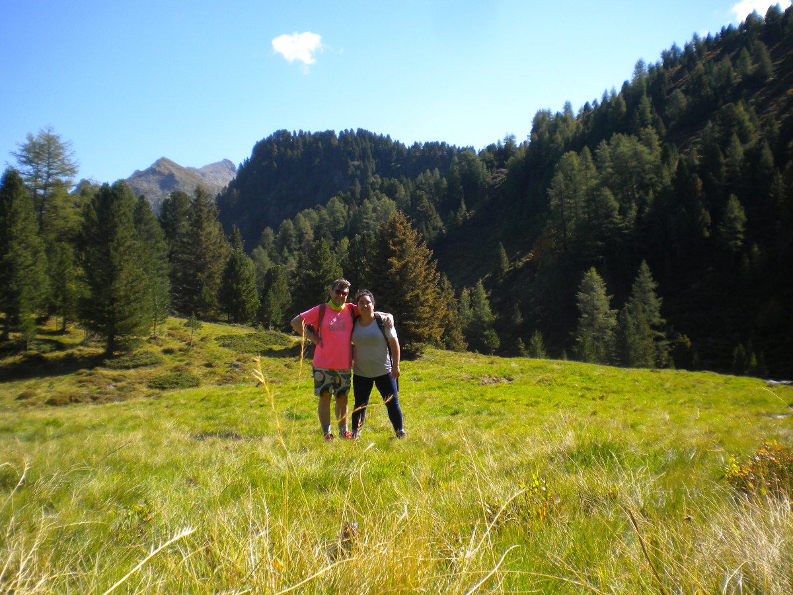
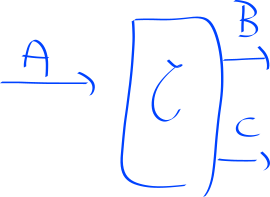

QML+ Conference Review & Current State of Quantum Machine Learning
(This series of posts originally appeared on the Silverpond blog)
Day 1

Well, we made it to Innsbruck, Austria!
It was a huge journey to get here, and I have to tell you, Austria in general, and Innsbruck in particular, is absolutely beautiful.
On the train ride from Vienna to Salzburg, we spent most of the time looking out of the window taking photos. The weather is amazing; it’s perfectly warm and sunny, and it’s amazing to walk around the town and just see mountains everywhere.
But, I’m here, of course, on business, and in particular, primarily to attend the QML+ – Quantum Machine Learning … Plus – conference.
It’s the night of Day 1, so here’s a review of what happened:
Opening Talk: Why QML+?
by Hans Briegel
Hans Briegel, famous partly for his involvement measurement-based quantum computation (and of particular relevance to me, because this was part of what my Masters work was about) gave an overview talk about why we might care to think about how quantum computing could play a role in machine learning.
I quite enjoyed one of his ideas, which is thinking about how “Embodied AI” relates to the ideas of “information is physical” insofaras both imply that in order to think about the primary subject, we need to involve physics. This has been particularly fruitful in physics and information theory, and relates to some very far-reaching ideas, such as black holes.
He used this as motivation to study a “Artificial Agent” (or in standard lingo, Reinforcement learning) in the quantum setting:

His observation is: What is quantum? There are four options:
- CC: Classical Agent, Classical Environment
- CQ: Classical Agent, Quantum Environment
- QC: Quantum Agent, Classical Environment
- QQ: Quantum Agent, Quantum Environment
He noted that in the Quantum-Quantum setting, there are some foundational open problems:
- How do you measure that you’re learning?
- What does it mean to “act” in a fully quantum setting?
- What role does decoherence play?
I don’t think even these questions are quite clear to me, let alone the answers; but still interesting to think about.
One idea/question I had is: What is the simplest truly quantum reinforcement learning problem?
Quantum algorithms for the Hopfield network, quantum gradient descent, and Monte Carlo
by Patrick Rebentrost
Next up was Patrick, who gave a far-reaching talk on a variety of topics that he and his colleagues have been researching over the last few years.
He started off by reminding us of a bunch of challenges that he posed in a prior paper:
- The “input” challenge - How to get data in to a quantum network? It turns out this is very subtle.
- The “costing” challenge - Just how many qubits are required to implement these algorithms? How practical is it to build?
- The “output” challenge - Even if we build an efficient quantum machine learning algorithm that produces a final state that encodes the answer; how do we read out the answer efficiently? It takes many measurements to extract the known state, so is it efficient to do so?
- The “benchmarking” challenge - even if we solve all the above, how does it compare to classical algorithms? It can be very hard to prove that the quantum algorithm is better than any possible classical one.
Next, he talked about a quantum algorithm for training a so-called “Hopfield” neural network via the Hebbian learning procedure.
The Hopfield network is simply one in each every node is connected to every other node; and there is only one layer, and every node is both input and output (there are no layers, essentially). This may seem odd, and you should rightly wonder how you could train such a thing. One way to train it turns out to be the so-called “Hebbian” learning, which is inspired by the Human brain. The idea is captured by the phrase: “Neurons that fire together wire together”. With this idea in hand, it’s possible to develop a scheme to encode all this into a quantum computer, and perform all the updates and training. You can find more here.
For the everyday deep learning person, these ideas may sound a bit odd. Rightly so, because it’s not standard practice. Essentially the only reason to focus on these for in the quantum machine learning setting is that this is a network for which we can come up with a scheme to implement it on a quantum computer. A natural question is: Can we adapt the Hopefield-network techniques to work with multiple layers? I tentatively feel like the answer could be “yes”, but I haven’t thought a lot about it.
The next paper he talked about is this one: Quantum gradient descent and Newton’s method for constrained polynomial optimization.
I happened to read this one when it came out, because it was quite a big step. Previously, we had no idea how to even compute a quantum gradient, so this contribution was huge.
Unfortunately, the main problem of this paper is that the algorithm gets exponentially slower as the number of training steps increases. This is, at least naively, incredibly problematic for typical machine learning, where the number of steps is in the hundreds of thousands. In the paper they make the argument that oftentimes good results can be achieved after a very small number of steps, but it’s not clear to me how practical this is.
His final topic was Quantum computational finance; he was basically out of time, so didn’t go in to much detail, but the main idea is that again, using a standard technique in quantum computing called “amplitude amplification”, one can achieve a quadratic speedup in a certain kind of derivative-pricing. It turns out that banks and genuinely interested in these techniques, because being able to price something in say ~2 days, instead of 7 days, is a significant advantage market-wise.
Partick ended with a funny remark along these lines, which is that, the beauty of working in the finance world is that you don’t need to prove anything, you just simply build it, and let it go around making trades in the market; if it doesn’t work, you simply lose money!
Lunch
Over lunch, I had a really nice chat with Pooya Ronagh from 1Qbit and Ronald de Wolf. We chatted largely about how the practical every-day machine learning could be aided by quantum techniques. Ronald pushed hard to understand what areas quantum researchers should focus on, and Pooya and I were trying to come up with ideas. Pooya had an interesting comment that, in many ways, faster machine learning isn’t super useful, because for the physical cost of a quantum computer, you can already buy significant hardware and get great results. So bad results faster doesn’t really help, in a foundational way.
Some thoughts we had is that maybe just flat-out alternatives to gradient descent would be interesting; i.e. we know there are areas where gradient-descent style optimisation is not great: translation, program synthesis, neural architecture search, etc.
In any case, it was a very inspiring chat, and I was really glad to have met them!
Programmable Superpositions with Hebbian (un)-Learning
by Wolfgang Lechner
This, I must say, was quite technical, and I didn’t quite follow most of it. But I did get the general idea.
The main tool of quantum machine learning is the so-called HHL algorithm (see also: Quantum linear systems: a primer). One thing it requires is efficient loading of the training data. It turns out that typically, if you want to load the training data into a quantum algorithm, in general you’ll need to do an exponential amount of work in the number of training samples. Which is hugely problematic. I think I need to understand this a bit more, but at least the basic idea was clear: the data-loading needs to be sped up.
The main contribution of this work is that, through a rather elaborate procedure, partially described here: Programmable superpositions of Ising configurations (but more in upcoming publications), it’s possible to prepare the required state by encoding it into a Hamiltonian, and then letting the Hamiltonian evolve via adiabatic evolution. How? Hebbian Learning, evidentally! I admit that I didn’t follow most of this talk, but I do think this kind of thing is quite interesting, and there’s definitely a need to solve this general, and reasonably embarassing problem.
Day 2
We’re back. There first two talks were quite great, and there was another that was interesting and is worth a mention.
Opening Talk: Artificial Intelligence & Quantum Computing
by Aske Plaat
Even though it had a reasonably uninspiring title, this talk was actually excellent, and should’ve, in fact, been the opening talk of the conference.
Aske introduced some motivation, and introduced some simplifying assumptions about AI to try and cut off typical arguments about what it means to be “intelligent”. He defined his working notion, which is “to be intelligent is to act intelligently”, which later was quite controversial to a number of people.
He had a unifying way of explaining why we’ve seen such a boom of AI recently, which is:
- Algorithms
- Data
- Speed
I think this is a nice way of phrasing it. He then dove into the various parts in more detail, starting with algorithms.
He introduced what he sees as two main camps of machine learning:
- Connectionist AI, and,
- Symbolic AI.
Connectionist AI, as he sees it, is the kind that we all know and love: Deep learning, neural networks, “bottom-up” reasoning, function approximation, etc.
Symbolic AI, as he sees it, is more related to philosophy, logics, ontologies, expert systems, planning, Q-Learning, and other kind of pre-defined “slow-thinking/high-level reasoning” ideas.
The main point he makes with the distinction is that maybe more merging between the two schools of thought needs to take place. He gives the example of AlphaGo as being a case where the two ideas merged. Another one I thought of is the idea of Algebraic Machine Learning which certainly has some grand claims, but is at least mildly interesting for it’s ideas.
He then made some comments about how speed is also relevant, and without it we wouldn’t see such a boom. Again this is of interest to quantum-computing types, because being faster than classical computers is fundamentally what the field is all about, and that’s where there’s been a lot of focus recently (i.e. quantum speedups over classical algorithms).
Aske also noted the abundance of benchmarks for classical machine learning, which became a theme for a few of the questions during question time. In particular we discussed who, if anyone, and how, if possible, to come up with some good benchmark datasets and problems for quantum machine learning. Presently, no-one has anything good along those lines.
He then noted some challenges in classical ML, and made the observation that simply achieving a speedup won’t solve these problems (for example, the adversial attacks, or the delayed credit assignment problem). The claim is that we need to put some effort into what truly quantum algorithms might look like.
The main thing I got out of the talk was the idea that we should be thinking about making new benchmarks for quantum machine learning.
Quantum-Assisted Machine Learnnig in Near-Term Quantum Devices
by Alejandro Perdomo-Ortiz
Alejandro is very experienced in this field, it turns out. He’s been leading a team at NASA working on QML for the last 5 years, and now has moved to Rigetti, where he’s conducting research on the frontiers of quantum machine learning (also, Rigetti has a quantum cloud service coming …)
At NASA his drive was to drive interest in the practical usage of the quantum devices that NASA had purchased (in particular the D-Wave).
He noted that quantum chemistry, and the simulation of quantum systems, was the most natural idea, and everyone should be looking at it. But furthermore, he was tasked with thinking of other problems that could be mapped to these particular optimisation devices. Naturally, one idea is just straightforwad discrete optimisation; finding some satisfying assignment of variables for the minimisation of some particular cost function. And he conducted some early work here mapping protein folding to a certain kind of optimisation problem.
He echo’d Aske’s thoughts and said that we should be focusing on designing new algorithms, over just simply speed.
One of the most memorably quotes from his talk was “Look for the intractable, the more intractable the better, for me”.
One thing he spent a bit of time on was using the D-Wave to again implement one of these Hopfield networks (he called it here a “fully-visible model”), on a simplified digit dataset. Turned out it worked! Which essentially demonstrated that it was indeed possible to map a ML problem onto the device, and then have the device learn it’s own weights (couplings, here) which would allow it to do well at generating new digits!
Following this work, they then observed that infact they could train an autoencoder entirely classically, and then use the embedding vectors for all the training data as-in the setup above to train a kind of hybrid generative system:

I must say that I found this both interesting and confusing. It’s interesting because it’s a great way to use the complicated device to do “real” work, even when it has alone a very small amount of input nodes (it was something like 46, here, for this device). But it’s also confusing because most of the “juice” in the network is in the classical weights, not in the embedding vector itself. When I asked Alejandro about this, he said that it was mainly a way to demonstrate the hybrid set up, and that over time the idea is to make more regions quantum, and see how that changes things. I find it very interesting to think about how one would even go about jointly training a hybrid quantum-classical system.
The next idea he covered was the learning of quantum circuits see also Differentiable Learning of Quantum Circuit Born Machine.
This I think is a particularly great idea, and his approach was to focus on generate certain kinds of entangled states, with great results. They managed to find a state that has more entanglement, compared to the standard one, with this scheme. They also made some interesting observations about the expressive power of the depth of the circuits and what kind of states they can possible prepare.
His final insights were:
- Focus on the hardest problems of interest to ML exports, as this will be the quickest path to demonstrating a quantum advantage in the near-term.
- Focus on novel hybrid quantum-classical approaches.
Lunch
For lunch, Gala and I decided to enjoy the beautiful park right next to the venue! By chance, there was a beer garden inside!
Machine learning for designing new quantum experiments
by Alexey Melnikov
This talk was essentially another kind of program-synthesis problem, but this time in the language of optical elements. The idea is that, given some set of optical elements, and some number of qubits, how can we find all the possible sets of operations that make entangled states?
There new idea is to use a Reinforcement-Learning-inspired framework called “Projective Simulation”. I must say that I found the framework a little odd, but they did get good results, and it’s available as a python library for you to experiment with!
The Quantum Way of Doing Computations: New Technologies for the Quantum Age
by Rainer Blatt
This talk was a bit oddly-placed. It was an overview of how quantum computing works, and an introduction to the trapped-ion style of quantum computing.
Panel
The last event of the day was a very large panel of most of the speakers (~10 people) with a bunch of questions prepared by the organisers that were aimed to be thought-provoking. The best comment that came out of the entire discussion was from Matthias Troyer:
“That’s how you get a quantum advantage with zero qubits”
He was describing the recent work by Ewin Tang: A quantum-inspired classical algorithm for recommendation systems (which we actually already covered here).
Open areas of investigation
Here’s the list of open/interesting topics from today:
- Quantum datasets; benchmark problems,
- Detecting entanglement?
- Creation of states?
- Classifying entangled vs. non-entangled?
- How to generalise across qubit sizes?
- Reinforcement learning problems? Quantum games? Quantum chess? Communication games?
What does truly quantum ML look like? Let’s stop trying to map classical algorithms to quantum ones, and just make up new ones
This hybrid idea of linking parts of a network to qubits and parts being classical
- How do you train these things?
- Near-term, if we want to do quantum ML, we should focus on what actual hardware will be used, and target our approaches to those models.
Day 3

Today, there were only 3 talks; and we had a free afternoon! So we climbed* the big mountain!
*: Okay okay, by “climbed” I mean “took the lifts”. But there were 3 lifts!
Opening Talk: Learning from Quantum Data: Strengths and Weaknesses
by Ronald de Wolf
This was a great and classic talk in the same vein as many talks in the theory of quantum computation.
Ronald addressed the natural problem of what you could do if you your data was given you to as a quantum state (thereby ignoring all the problems that have been brought up with QRAM in the past few days; let’s just suppose we have the state!).
The proposal is to consider supervised learning in a very formal sense; imagine we have a function: f : {0, 1}n → {0, 1}.
Then, we can think of it as a supervised learning problem where we have n binary features, producing a single binary output, and we have our examples in the form: (x,f(x)).
Ronald wanted us to consider the so-called sample complexity, i.e. how many times do we have to evaluate f, instead of the more standard time complexity. In this sense here, the ideas are at least related, because fewer samples will take less time.
In general we’d need 2n examples to learn f fully, but we’ll want to do efficient learning, so we’d like to learn from far fewer queries than that.
Ronald preferred to work in the framework of PAC-learnability, which was introduced by Leslie Valiant in 1984. Leslie has a nice readable book on the topic (I’ve unfortunately lost my copy a while ago) which is well worth a read.
It turns out that in 1995, Bshouty and Jackson introduced a quantum version of this notion (see also Quantum DNF Learnability Revisited).
Their idea is to consider the state of training data: $$ \sum_{x \in \{0,1\}^n } \sqrt{D(x)} |x, f(x)\rangle $$ To demonstrate a speedup, suppose that we have the uniform distribution over the samples; so then our state becomes $$ \frac{1}{2^n} \sum_{x \in \{0,1\}^n } |x, f(x)\rangle $$ The main idea is to hit this with the Fourier sampling tool, that is a classic trick in quantum algorithms. The essential idea is, firstly support that (x) = ± 1, then we can do another standard trick, the Hadamard transformation, and obtain the state $$ \frac{1}{2^n} \sum_{x \in \{0,1\}^n } \hat{f}(s)|s\rangle $$
where $$\hat{f}(s) = \frac{1}{2^n} \sum_{x} f(x) (-1)^{s \cdot x}$$.
The point here is that when you measure this final state, the state you see is s with probability f̂(s)2. For a certain choice of f, namely when f is linear mod 2, then you can learn the function perfectly in exactly one query. Classically you would require at least n queries. Great reduction!
He then went into a few more examples, getting a little bit more technical each time; one was for the so-called “Coupon collector” problem, which is simply: imagine you get a random baseball card from a store, how many times do you need to visit the store before you have the entire set of cards?
Again, because this is a uniform problem, we can use similar techniques to improve on it. Classical, one can find that the expected number of store visits (samples) is approximately Nlog N (where N is the number of cards in total), but quantumly it can be done with O(N) samples.
Perhaps of interest, was some conclusions that they were able to show that no quantum speedup can be obtained when for all distributions; i.e. there are some bad distributions that we will just struggle with. I don’t think anyone finds this particularly surprising, and shouldn’t have a big impact on real-world problems, because typically, most data isn’t, shall we say, adversially prepared; the distributions tend to be wildly different (a natural example being the set of all images of mountains as a subset of all possible images).
The main idea here is that by utilising standard tricks from quantum algorithms we can get significant speedups when we know something about the distribution that we are learning from.
Limitations on learning of quantum processes
by Mario Ziman
This one was a little bit technical, but it had some interesting ideas.
Mario phrased the problem of quantum machine learning as follows:

The point being that in typical ML we want to modify the function f, and in quantum ML then we wish to modify the unitary Uf. This turns out to be quite problematic, because this function is truly quantum, and we know that quantum states suffer from the no-cloning principle: you cannot copy an unknown quantum state; so you can only use it once. Mario mentioned that this results in a No-programming theorem, which means that we cannot perfectly store an unknown quantum transformation (i.e., even if we find a Uf that works well; we can’t save it! We have to know how many times we want to use it in advance!).
However, it turns out we can still make some progress by, instead of requiring some kind of exact copy, we aim for probabilistic performance. The only remaining thing I got from this talk was that probabilistic learning, in their sense involving some kind of “probabilistic Q learning” is related to quantum teleportation. You can read about this work more here.
Discovering physical concepts with neural networks
by Renato Renner
This was a talk I was quite excited about. The paper for it is here. They’ve also made the code available, in TensorFlow.
The fundamental idea is really nice: Maybe we can build a neural network to act exactly as a standard human physicist would: they shall observe data, try and form theories, ask questions of their theories, and then check the answers.
This is very nicely expressed by the picture from the paper:

The point is that they train an autoencoder on the data, but the put constraints on the latent vector so that the entries by adding the mutual information between them on to the loss so-as to require independence; i.e. the parameters that the network learns should be independent.
They then introduce this idea of questions and answers. Unfortunately, I think the way this idea doesn’t go far enough is by, it seems to me, treating the answers as the input data itself; so that truly this network only functions as a special kind of autoencoder (at least, this is how it is in the code, and as far as I can see in the paper).
In any case, they’re able to show several problems where it is able to look at experimental data and where the latent variables are correlated to the terms that they expected to see in the equations that model these phenomena. I think that’s pretty cool.
One thing Renato noted quite strongly was that perhaps this isn’t super surprising, and maybe the network received a lot of help by the way the data was sent to it. I think that this could be mitigated, maybe, by thinking a bit more about the quesiton/answer set up, and more generally thinking about how we can allow the network to reject data samples.
Some ideas I had during this talk related to the kind of “falsifiability” ideas; namely that if this system is forced to come up with theories for data, then how can we also ensure that the theories it has can be proven wrong?
My other idea was, what if instead of just having a latent variable, i..e an independent variable, have an entire neural network in there, that could perhaps serve as an “independent explanation”.
Overall, I quite enjoyed this talk and idea.
Open areas of investigation
The interesting things that came to me regarding today were:
- What other cool quantum algorithm tricks should we be using?
- Bomb testing?
- The bomb-testing thing is a kind of learning anyway. Probably interesting?
- If we do really want to learn truly quantum unitaries, then what’s the deal with having to know how many times we want to use it!? That’s crazy!
- How can we make a better machine for generating theories?
Day 4

Well, it’s Thursday night, and I’ve just finished up my last day at the conference. Tomorrow, we’ll be heading on our (short) holiday! While QML+ formally has two more talks tomrorrow, they are less relevant to me personally, plus we need to get a head start to make it to some waterfalls!
Here’s my summary of the talks I attended today!
Opening Talk: ML+Q
by Matthias Troyer
With an amusingly-titled talk, Matthias is the master of classical simulation algorithms for quantum processes. He spends most of his time working on the software side, trying to demonstrate practical quantum speedups for optimisation problems.
As with most of the other talks, he described several pieces of work. The first was a neural network that could be used to learn a quantum wave function, and then used to find phases and amplitudes of given states, and compute other properties.
Their setup was the (seemingly-standard) Restricted Boltzmann Machine, where the input was whether-or-not there is a z-rotation on the given qubit, and the output being the inner product with some state |s⟩.

But, non-standardly, the weights of this network are actually found using what they refer to as “reinforcement learning”, but is actually something called “Stochastic Reconfiguration”. Once they find initial values for the weights, by looking at the Hamiltonian of the particular system, they then fine-tuned, if they want to compute properties that depend on time. It’s a little bit involved, to say the least.
Anyway, having done this, they do acheieve some nice results. They are able to use their neural network to compute various properties quite well.
Later, they applied an RBM again, but without the weird “Stochastic Reconfiguration”, and were able to get very good results in learning quantum states.
He then spent a bit of time covering his work on quantum annealing. In particular, in that worked they observe that quantum annealers seem to be fated to always produce unfair samples of the potential states; i.e. not every state has equal probability to appear. Ingeniously, they came up with a classical simulation of quantum annealing that is actually faster and more accurate. Even more ingeniously, they show that infact they can implement the classical simulation as a quantum process, and again get a speedup, for a total of a quartic (2 times quadratic) speedup!
All this resulted in the numerical comment that if there is any quantum annealing problem you’re running classically for more than 1 day, you’ll go faster if you use a quantum annealer.
One of the interesting conclusions for this part of the work was, when you’re simulating adiabatically evolving something classically, sometimes it’s better, if you want tunneling, to evolve very fast (the adiabatic theorem would tell us we need to evolve slowly). He demonstrated this in an amusing way by saying that he could tunnel through the wall in room if we would just close our eyes for 30 seconds, instead of 30 microseconds.
His other summaries were:
- Neural nets are great for learning efficient representations of wave functions; and probably more
- Stoquastic quantum annealing can be well mimicked by a classical laptop
- Sampling bias makes quantum annealers bad for this task
- Gate-model quantum computers will accelerate quantum-inspired algorithms
Early Lunch/Hike
Unfortunately, a talk I was looking forward to, by Franceso Petruccione, probably related to this work was cancalled, so Gala and I went for a long hike instead. We almost got lost, found beautiful forests, found a beautiful field that reminded me of Jurassic Park, lost faith in ever seeing the bottom of the mountain again and eventually made it back to the lifts alive.
This impromptu adventure meant we just got back in time for the last talk of the day.
Quantum speedup in testing causal hypotheses
by Giulio Chiribella
This talk was essentially based around this paper.
The main point is to think about a framework for causal hypotheses, and then see how classical and quantum approaches compare. The setup as like so:

We think of curly-C as some kind of unknown process (for example, node.js,
ha ha ha), and then ask ourselves: What is the causal relationship between B
and A? And between C and A?
The setting Giulio proposes is that we want to be able to determine exactly, from a given set of hypotheses, which one is correct. Here, imagine the following:
- Hypothesis 1: B is dependent on A, and C is uniformly random.
- Hypothesis 2: C is dependent on A, and B is uniformly random.
The question is: Who can do better, as a function of the number of trials, to determine which hypothesis is right? In order to be able to make progress, we allow ourselves interventions; i.e. that we can feed data into A, and then use that to make subsequent queries to curly-C.
For reasons I don’t really understand, in the paper they claim that classically, if the dimension of all variables is finite and fixed to d, then, if B (or C) is dependent on A, then that means that the function mapping A to B is invertible. With such a constraint, it’s easy to see that it’s possible to determine the difference between the two hypothesis. The value of interest to them is the “discrimination rate”, as the number of experiments is performed. They find that it is log d. Quantumly, they find that they are able to differentiate the two hypothesis with discriminatio rate 2log d. This, in the theory they’ve developed, is exponentially better than the classical case. Great!
I left this talk a little bit confused, but at least vaugely interested in the idea of quantum causal modelling.
Open areas of investigation
The interesting things that came to me regarding today were:
- How to combine SciNet with the neural-nets for determining wave functions?
- What’s the relationship between tensor networks and these neural nets? and Conv nets?
Final thoughts on the conference
Overall, I’m inspired by quantum machine learning. I feel like there’s heaps of cool things to do.
Unfortunately, I’m disappointed by some things about this conference. Having come from so far away, and wanting to maximise my time the best way, I found it frustrating that even the titles for most of the talks weren’t known in advance.
I found the conference events and overall feeling to be very non-inclusive. There was lots of mention of people working in ML/QC as “guys”; there were lots of in-crowds and, while there was lots of talk of wanting to mix with the “machine learning crowd”, people were somewhat skeptical of me not being associated with any university, and attempts to organise people as either “machine learning/classical” and “quantum”. Further, there was also no mention of a code of conduct.
Sarah Moran, of Girl Geek Academy once gave a talk about “micro positive-actions” (or something, I can’t remember the name) but the ones that stuck out to me were:
- Name tags, always (this conference did well at this),
- Always leave a spot open in a talking circle,
These are great rules of thumb for any organisers to keep in mind. If you have more, please let me know!
Overall, it would be great to see these academic conferences put significant effort into making their conferences feel much more welcoming to all types of people.